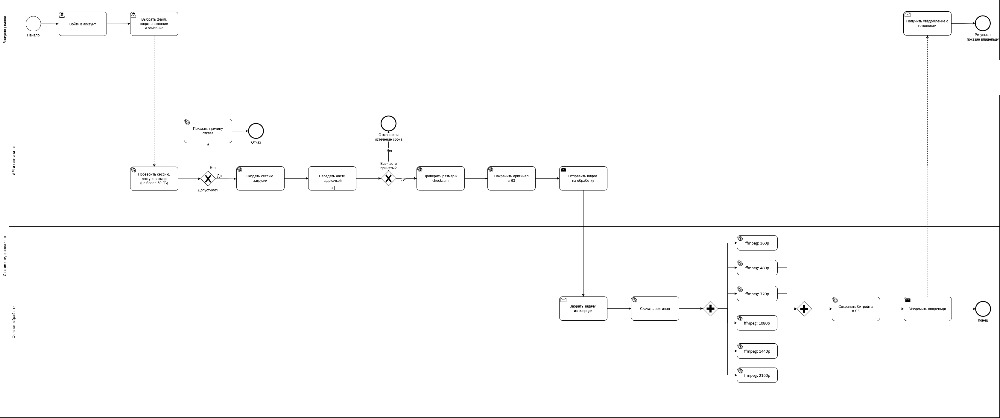
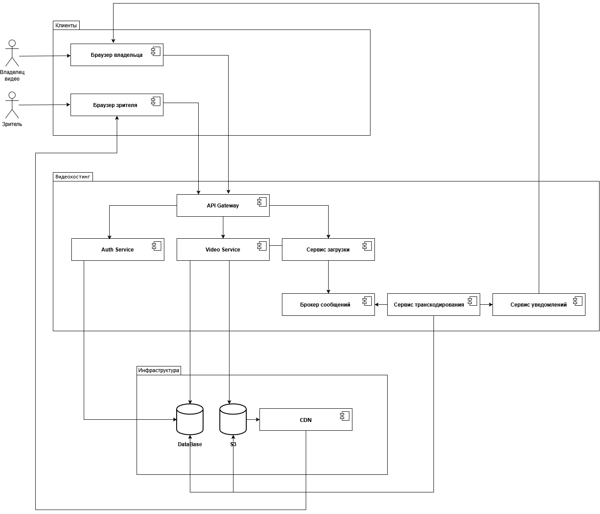
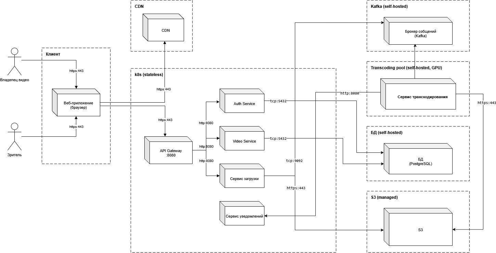
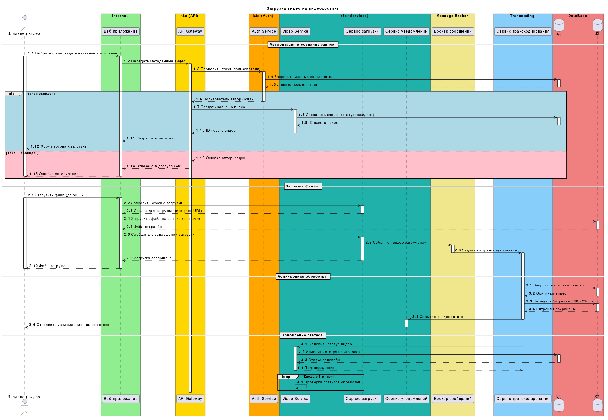

Проект по проектированию архитектуры видеохостинга в рамках курса Fullstack Analyst
Разработать масштабируемую архитектуру видеохостинга с поддержкой:
| Возможность | Описание |
|---|---|
| Загрузка | Поддержка видеофайлов до 50 ГБ с дозагрузкой при обрыве |
| 🎞️ Транскодирование | Автоматическая генерация битрейтов 360p → 2160p через FFmpeg |
| 🌐 Стриминг | Доставка контента через CDN с географическим распределением |
| Асинхронность | Обработка через очереди сообщений (Kafka) |
| 💾 Хранение | Отказоустойчивое хранилище с репликацией оригиналов |
| ▶️ Видеоплеер | Управление воспроизведением, встраивание по ссылке |
| Действие | Описание |
|---|---|
| 📤 Загрузка | Загружает видео в систему (с возможностью дозагрузки) |
| ✏️ Управление | Редактирование названия, описания, удаление роликов |
| 📊 Статистика | Просмотр просмотров и лайков |
| 🔐 Авторизация | Управление только своими видео |
| Действие | Описание |
|---|---|
| ▶️ Просмотр | Смотрит видео без регистрации в обычном и ускоренном режимах |
| ❤️ Взаимодействие | Лайки и комментарии (требуется регистрация) |
| 🔗 Шеринг | Делится видео в социальных сетях, встраивает по ссылке |
| Поиск | Ищет видео по названию и описанию |
| # | User Story |
|---|---|
| 1 | Как владелец видео, я хочу зарегистрировать аккаунт, чтобы загружать ролики и управлять ими |
| 2 | Как владелец видео, я хочу войти в личный кабинет, чтобы увидеть свои видео и доступные действия |
| 3 | Как владелец видео, я хочу выйти из аккаунта, чтобы никто другой не получил доступ к моим видео |
| 4 | Как владелец видео, я хочу выбрать видео и заполнить название и описание, чтобы опубликовать его для зрителей |
| 5 | Как владелец видео, я хочу удалить своё видео, чтобы убрать его из доступа |
| 6 | Как владелец видео, я хочу изменять название и описание своего ролика, чтобы исправить или дополнить информацию |
| 7 | Как владелец видео, я хочу видеть просмотры и лайки каждого своего видео, чтобы оценивать интерес аудитории |
| # | User Story |
|---|---|
| 1 | Как зритель, я хочу искать видео по названию и описанию, чтобы находить интересующий контент |
| 2 | Как зритель, я хочу смотреть видео без регистрации и управлять воспроизведением, чтобы смотреть его удобным способом |
| 3 | Как зритель, я хочу зарегистрироваться, чтобы оставлять лайки и комментарии |
| 4 | Как зритель, я хочу войти/выйти на странице просмотра, чтобы управлять своим аккаунтом |
| 5 | Как зритель, я хочу поставить или убрать лайк, чтобы выразить или изменить свою оценку видео |
| 6 | Как зритель, я хочу написать комментарий, чтобы обсудить видео |
| 7 | Как зритель, я хочу удалить комментарий, чтобы отозвать своё сообщение |
Использование очереди сообщений (Kafka) для асинхронной обработки транскодирования. Пользователь не ждёт завершения обработки — система уведомляет о готовности.
Автоматическая генерация битрейтов с помощью FFmpeg. Принцип адаптивного стриминга: сначала отдаём низкие битрейты (быстрый старт), по мере готовности добавляем высокие.
| Битрейт | Разрешение | Применение |
|---|---|---|
| 360p | 640×360 | Мобильные устройства, быстрый старт |
| 480p | 854×480 | Планшеты |
| 720p | 1280×720 | HD-мониторы |
| 1080p | 1920×1080 | Full HD |
| 1440p | 2560×1440 | 2K-дисплеи |
| 2160p | 3840×2160 | 4K-телевизоры |
| Компонент | Технология | Назначение |
|---|---|---|
| 🪣 S3 | AWS S3 / MinIO | Хранение оригиналов и битрейтов |
| 🔁 Репликация | Multi-AZ | Дублирование оригиналов для отказоустойчивости |
| 🌍 CDN | CloudFront / CloudFlare | Географическое распределение контента |
Стратегия хранения:
Загрузка видео со стороны владельца



Сценарий: Загрузка видео на видеохостинг

| Шаг | Этап | Описание |
|---|---|---|
| 1️⃣ | Авторизация и создание записи | Проверка токена, создание записи о видео в БД (статус: «ожидает») |
| 2️ | Загрузка файла | Получение presigned URL, загрузка в S3 чанками (до 50 ГБ) |
| 3️⃣ | Асинхронная обработка | Задача на транскодирование через Kafka, генерация битрейтов 360p–2160p |
| 4️ | Обновление статуса | Изменение статуса видео на «готово», уведомление владельца |
| Компонент | Роль |
|---|---|
| Владелец видео | Инициатор загрузки |
| Веб-приложение | Клиентский интерфейс |
| API Gateway | Маршрутизация запросов |
| Auth Service | Проверка JWT-токена |
| Video Service | Управление метаданными видео |
| Сервис загрузки | Presigned URL, приём файла |
| Сервис уведомлений | Оповещение о готовности |
| Брокер сообщений (Kafka) | Очередь задач на транскодирование |
| Сервис транскодирования | FFmpeg + GPU, генерация битрейтов |
| БД (PostgreSQL) | Хранение метаданных |
| S3 | Объектное хранилище |
k8s (API), k8s (Auth), k8s (Services). Физически все они развёрнуты в одном кластере Kubernetes, что отражено на диаграмме развёртывания.| Категория | Технология | Обоснование |
|---|---|---|
| 🚪 API Gateway | Kong / NGINX | Маршрутизация, rate limiting |
| 🔐 Auth Service | Node.js + JWT | Быстрая аутентификация |
| 🎬 Video Service | Go | Высокая производительность |
| Upload Service | Node.js | Работа с потоками, чанковая загрузка |
| 🎞️ Transcoding | FFmpeg + Python | Стандарт индустрии, GPU-ускорение |
| 📨 Message Broker | Kafka | Надёжные очереди, self-hosted |
| 🗄️ Database | PostgreSQL | ACID, надёжность, self-hosted |
| 🪣 Storage | S3 (managed) | Объектное хранилище |
| 🌍 CDN | CloudFront / CloudFlare | Глобальная доставка контента |
| ️ Orchestration | Kubernetes | Масштабирование, stateless-поды |
| Требование | Описание | Приоритет |
|---|---|---|
| ✅ Доступность | Система должна быть доступна 24/7 | 🔴 Высокий |
| Бесперебойность | Отказоустойчивость при выходе серверов из строя | Высокий |
| ⚡ Производительность | Быстрая загрузка и воспроизведение видео | 🟡 Средний |
| 🔐 Авторизуемость | Управление только своими видео | 🔴 Высокий |
| 📊 Масштабируемость | Горизонтальное масштабирование при нагрузке | 🟢 Низкий |